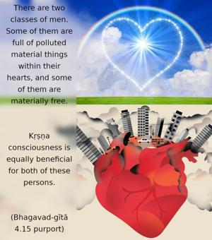

All the liberated souls in ancient times acted with this understanding of My transcendental nature. Therefore you should perform your duty, following in their footsteps.

There are two classes of men. Some of them are full of polluted material things within their hearts, and some of them are materially free. Kṛṣṇa consciousness is equally beneficial for both of these persons. Those who are full of dirty things can take to the line of Kṛṣṇa consciousness for a gradual cleansing process, following the regulative principles of devotional service. Those who are already cleansed of the impurities may continue to act in the same Kṛṣṇa consciousness so that others may follow their exemplary activities and thereby be benefited. Foolish persons or neophytes in Kṛṣṇa consciousness often want to retire from activities without having knowledge of Kṛṣṇa consciousness. Arjuna’s desire to retire from activities on the battlefield was not approved by the Lord. One need only know how to act. To retire from the activities of Kṛṣṇa consciousness and to sit aloof making a show of Kṛṣṇa consciousness is less important than actually engaging in the field of activities for the sake of Kṛṣṇa. Arjuna is here advised to act in Kṛṣṇa consciousness, following in the footsteps of the Lord’s previous disciples, such as the sun-god Vivasvān, as mentioned hereinbefore. The Supreme Lord knows all His past activities, as well as those of persons who acted in Kṛṣṇa consciousness in the past. Therefore He recommends the acts of the sun-god, who learned this art from the Lord some millions of years before. All such students of Lord Kṛṣṇa are mentioned here as past liberated persons, engaged in the discharge of duties allotted by Kṛṣṇa.